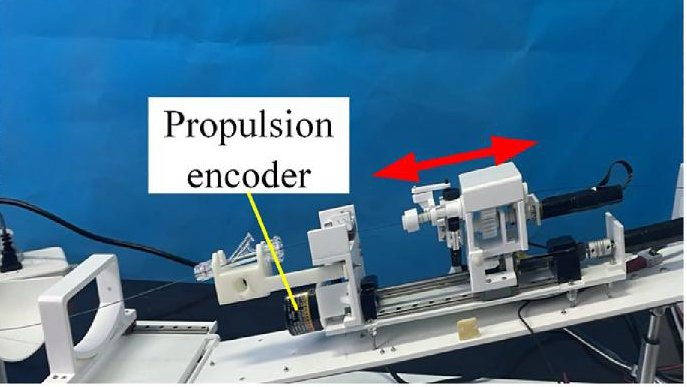

Academic bedside robots · yanshan_yu2023
Wearable VIR
Yanshan University wearable vascular interventional surgical robot

1 / 11


- Family
- Academic bedside robots (academic)
- Devices
- one guidewire or one catheter at a time; catheter and guidewire cannot be driven together (Sec. 4). Animal study: Cordis ATW guidewire (ATW-595-ME014) through a manually placed MPA1 8F catheter (Sec. 2.3.4)
- Degrees of freedom
- 3 device DOF: clamp, push/pull, twist (Sec. 2.1, Sec. 5); plus DM pitch set by a linear actuator and position on a lockable slideway of the wearable frame (Sec. 2.1.2, Fig. 6)
- Push
- Clamp relay
- Twist
- Rotating clamp
- Tested up to
- Animal
- Sim-to-real
- None found — No simulation-trained controller found for this robot.
Testing
- Highest level
- Animal
- What was tested
- bench: 5 push and 5 twist master-slave tracking runs, 5 force-feedback runs (Sec. 2.3.1-2.3.2); human vessel model: 4 untrained testers x 3 targets x 3 trials, all 12 target deliveries within 60 s by the 3rd trial (Table 1); animal: 1 Bama pig (SIAT), guidewire to the right coronary artery, 3 robotic vs 3 manual deliveries, delivery time +2.46 %, operator exposure time -71.50 % (Sec. 2.3.4, 3.4, Fig. 23)
- Key numbers
- static error 0.048 mm (0.019 %), relative dynamic error 0.204 % over 250 mm; rotation static error 1.259 deg (0.682 %), relative dynamic 2.217 % over 400 deg; force-feedback error mean 0.021 N, max 0.055 N (mean 2.566 %, max 6.746 %) (Sec. 3.1-3.2); 5 motors in master + slave; wireless NRF24L01 master-slave link (Sec. 2.2.1)
Mechanism
- Push (translation)
- clamp-relay: fixing module (F1, F2) holds the wire while the clamping module (C1, C2) on a screw-driven slider pushes, then they swap ('reciprocating delivery'; Sec. 2.1.2, Figs. 7-8); propulsion DC motor 26SYK55.24 (Sec. 2.2.1)
- Twist (rotation)
- wedge-shaped gripper closed by a crank-rocker and spring, rotated with the clamped wire through a gear set by a Maxon RE13 motor (Sec. 2.1.2, Fig. 9)
- Device range
- N.R.
- Target anatomy
- coronary (PCI): radial artery to the coronary arteries in a human vessel model, femoral access to the right coronary artery in a pig (yu2023_wearable Sec. 2.3.3-2.3.4)
Sensing and interface
- Force sensing
- slave: pressure sensor (SBT674-10 N) under the clamping module, a lever with arm ratio l1/l2 = 3 amplifies the delivery resistance 3x (Sec. 2.1.2, Fig. 10); master: torque sensor (DSN-206) in the handle drive (Sec. 2.2.1)
- Leader and haptics
- custom 3-DOF handle (operating manipulator): slide and rotation read by encoders, three-button squeeze read by a thin-film sensor (Flexiforce) sets the clamp; a servo motor with torque sensor drags the handle, velocity-force mapping slows it as delivery resistance rises (Sec. 2.1.1, 2.2.2, Figs. 2-5, 14)
- Imaging
- used under a C-arm angiography system in the pig study (Sec. 2.3.4, Fig. 19); radiolucency N.R.
- Sterility
- driven gear shaft and gripper held by a magnetic cover, removed and replaced after surgery for sterilisation (Sec. 2.1.2); drape N.R.
Size
- Footprint (mm)
- N.R.
- Mass (kg)
- N.R.
Simulation
- Simulation model
- none found
- Sim-trained controller
- none found
Versions
- Lineage
- 2023 wearable system (yu2023_wearable; received 2023, IJMRCAS 2024;20(1):e2616); its fuzzy-PID position controller comes from the group's earlier robot Yu et al., Appl. Sci. 2021;11(2):611 (ref. 24, not read); the same group's 2023 complex-coronary robot is A2's yu_complexcoronary_2023; 2021: H. Yu / H. Wang (Yanshan) VIS robot with force feedback and flexible clamping (Yu 2021 Appl. Sci. 11:611) and precise-delivery VIS robot with an operating-sleeve leader (Wang 2021 IEEE Access), possibly one robot (Chen 2023 Figs. 6(d), 9(a); Duan 2023 Table 1 row 4) (chen2023_operating; duan2023_progress); 2018: H. Y. Yu / H. B. Wang (Yanshan) master-slave system: master with an operating sleeve that slides and turns on a shaft (ball and V-groove decoupling), two encoders and a magnetic-particle clutch for force feedback; wire feeder that clamps, pushes and twists the device with a fixed, a promoting and a rotating finger; five servo motors; bench: feedback torque of the clutch calibrated with weights from 0.05 to 1 N m, about linear in the clutch current (Yu 2018 RCAR, Secs. II, IV, Figs. 2, 6, 11); the group's 2011-2015 mechanisms (X. Yang, H. Wang; Zhao 2022 Table 1 row 8b, Belikov 2024 Fig. 6 YA) are earlier versions, not read (yu2018_master; zhao2022_remote; belikov2024_evolution)
Sources
- Design and evaluation of a wearable vascular interventional surgical robot system · The International Journal of Medical Robotics and Computer Assisted Surgery, 2023 · doi:10.1002/rcs.2616 [yu2023_wearable]
- The Catheter and Guidewire Operating Systems of Vascular Interventional Surgical Robots: A Systematic Review · IEEE Transactions on Medical Robotics and Bionics, 2023 · doi:10.1109/tmrb.2023.3272049 [chen2023_operating]
- Technical and Clinical Progress on Robot-Assisted Endovascular Interventions: A Review · Micromachines, 2023 · doi:10.3390/mi14010197 [duan2023_progress]
- Master-Slave System Research of a Vascular Interventional Surgical Robot · 2018 IEEE International Conference on Real-time Computing and Robotics (RCAR), 2018 · doi:10.1109/rcar.2018.8621763 [yu2018_master]
- Remote vascular interventional surgery robotics: a literature review · Quantitative Imaging in Medicine and Surgery, 2022 · doi:10.21037/qims-21-792 [zhao2022_remote]
- Evolution and current state of robotic catheters for endovascular surgery: A comprehensive review · Engineering Science and Technology, an International Journal, 2024 · doi:10.1016/j.jestch.2024.101789 [belikov2024_evolution]
Notes
- Notes
- Resolves A2's open question: yu_complexcoronary_2023 (Yu, Wang, ..., Niu) is the Yanshan University group. | 2026-10-13 coordinator: highest_validation bench -> phantom from the full text (W4_notes.md) | 2026-10-13 Q2: highest_validation restored phantom -> animal (abstract: "human vascular models and animal experiments"); the coordinator bench -> phantom correction of 18:00 was meant for yu_complexcoronary_2023 (W6_notes.md item 9) | 2026-11-08 X3: full text read; slave is a wearable frame strapped to the patient's limb (pig hind leg), no bedside arm (Sec. 2.1.2, 2.3.4); one pig confirmed (validation stays animal); devices at once = 1 (Sec. 4) | N4 2026-11-09: yu2018_master read in full: built master and wire feeder (photos, Figs. 2 and 6), one measured bench result (clutch torque calibration, Sec. IV-B); the position-tracking result named in the abstract is not reported in the text; filed as a version line (same group and three-finger feeder lineage); row cells unchanged
This record
- Read level
- full — full (yu2023_wearable,, hand-downloaded 2026-11-08); full (yu2018_master, version line)
- Picture
- yu2023_wearable Fig. 15, slave-end panel (delivery manipulator on its propulsion test bench), p. 6, IJMRCAS 2024 doi:10.1002/rcs.2616 ↗ — licence: publisher copyright; grade C
- Picture changes
- native extract (942 x 455 figure); cropped to the slave-end panel; nothing erased; not upscaled
- Found by
- gap: Gap searches for robots the other searches missed.
- Data
- JSON · YAML:
records/robots/yanshan_yu2023.yaml - Correction
- Suggest a correction [repository not created yet]